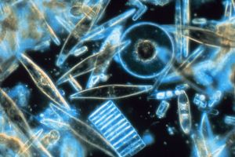

Στα οικοσυστήματα, γίνεται μια διάκριση ανάμεσα στους παραγωγούς, τους καταναλωτές και τους αποικοδομητές. Όλοι οι οργανισμοί που παίρνουν ενέργεια από τον ήλιο και είναι ικανοί να συνθέσουν ή να δημιουργήσουν τις δικές τους οργανικές ουσίες, όπως τη γλυκόζη, ονομάζονται παραγωγοί. Όλα τα φυτά είναι παραγωγοί. Οι καταναλωτές (όπως τα ζώα) προσλαμβάνουν την ενέργειά τους τρώγοντας άλλους οργανισμούς. Στα υδάτινα οικοσυστήματα επιπλέον διάκριση μπορεί να γίνει ανάμεσα στα μακρόφυτα (μεγαλύτερα υδρόβια φυτά) και το φυτοπλαγκτόν. Ο όρος πλαγκτόν αναφέρετε σε μικρούς κινούμενους οργανισμούς. Μερικά είδη πλαγτκτόν είναι παραγωγοί (φυτοπλαγκτόν, όπως τα φύκια), άλλοι είναι καταναλωτές (ζωοπλαγκτόν, όπως το γένος Daphnia). Σε πολλά υδάτινα οικοσυστήματα το φυτοπλαγκτόν είναι ο κυριότερος παραγωγός.
Η πρωτογενής παραγωγή είναι η διαδικασία με την οποία οι παραγωγοί (φυτά) συνθέτουν νέες οργανικές ουσίες από ανόργανη ύλη. Η πρωτογενής παραγωγή περιλαμβάνει συνήθως τη φωτοσύνθεση και μια αύξηση στην ποσότητα των οργανικών ουσιών. Επομένως το συνολικό βάρος των παραγωγών είναι ένα καλό μέτρο του ρυθμού πρωτογενούς παραγωγής σε ένα οικοσύστημα. Ο όρος βιομάζα χρησιμοποιείται συνήθως για αυτό το σκοπό. Η βιομάζα ορίζεται ως η συνολική μάζα ζωντανών οργανισμών σε ένα συγκεκριμένο οικοσύστημα σε μια συγκεκριμένη στιγμή. Η βιομάζα μπορεί να μετρηθεί ως το συνολικό, φυσικό βάρος των οργανισμών ή ως το ξηρό οργανικό βάρος (όταν όλο το νερό έχει αφαιρεθεί). Στα πλαίσια της αποστολής μας θα επικεντρωθούμε στο βάρος των παραγωγών μόνο.

Διάτομα (μια σημαντική ομάδα φυτοπλαγκτόν) όπως φαίνονται μέσα στο μικροσκόπιο. πηγή: Wikipedia / NOAA Corps Collection